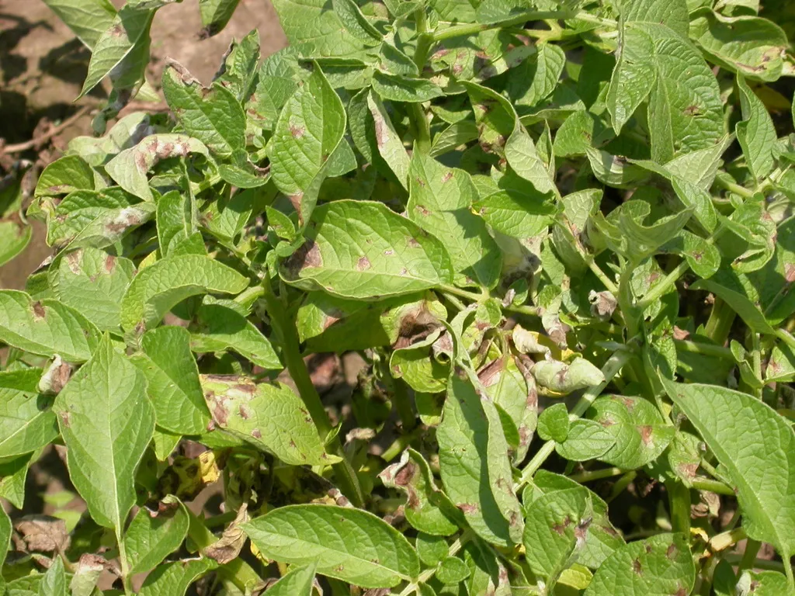

Because of the significant economic loss that disease contributes to, I decided to build a Deep Learning Model called a CNN (Convolutional Neural Network) to classify images of healthy and late-blight affected plants. This would allow farmers to detect diseases faster than manual methods and reduce yield loss.
My project was my first time programming in machine learning, understanding how to build a model from scratch using TensorFlow and the process in analyzing datasets.
Although it was a theoretical idea relying on the implementation of drone data, it was an awesome exploration into the ways data can create climate change solutions in food sustainability.
Here's the link to the full research article about the project.